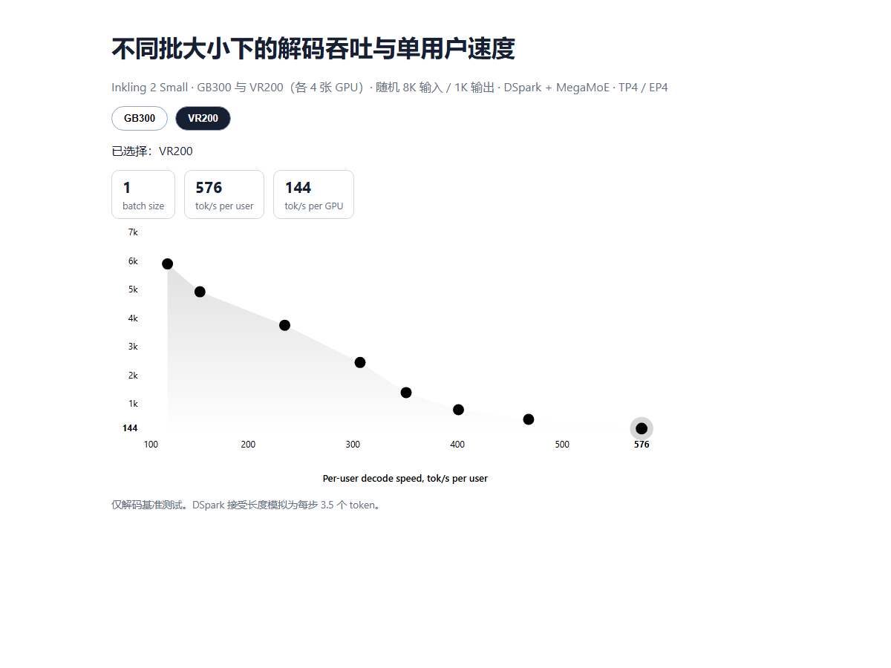
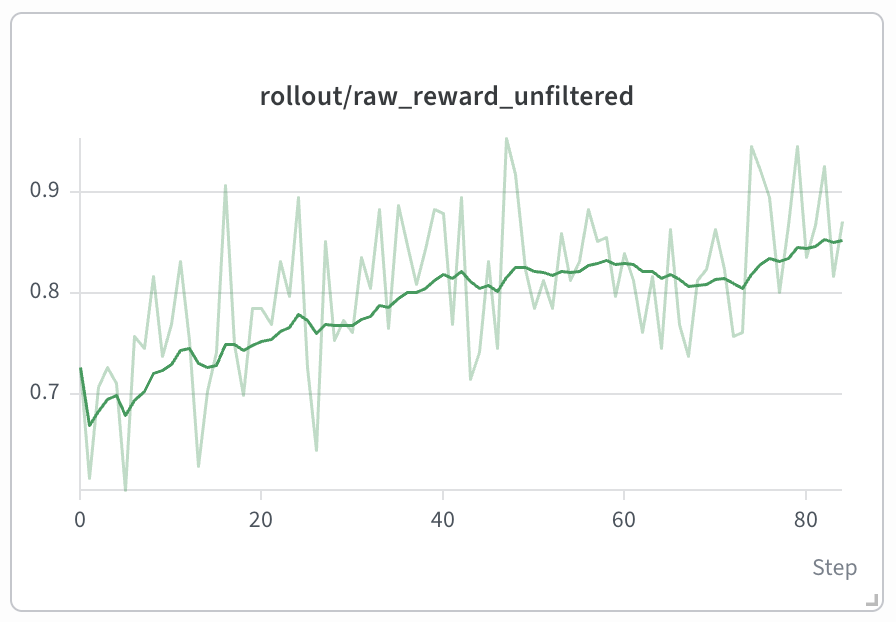
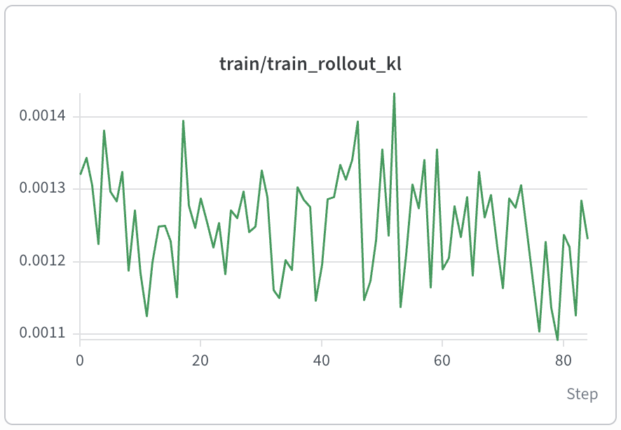
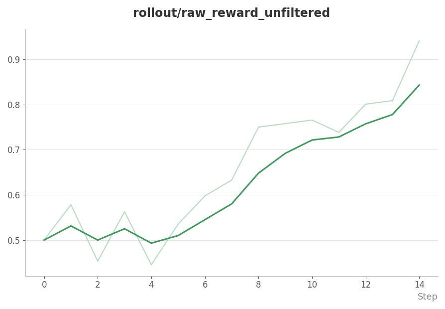
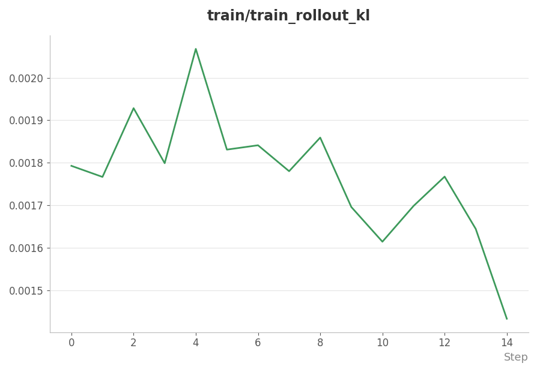

SGLang 与 Miles 为 Inkling 2 Small 提供首日支持
SGLang 为 Inkling 2 Small 开放权重版本提供首日推理支持，Miles 同步提供强化学习支持。

Inkling 2 Small，GB300 与 VR200 各 4 张 GPU；随机 8K 输入 / 1K 输出；DSpark + MegaMoE；TP4 / EP4。该图支持在 GB300 与 VR200 两组数据间切换。
概览
Thinking Machines Lab 已发布 Inkling 2 Small 的开放权重。这是一个混合专家模型，总参数量 594B、激活参数量 17B，面向智能体编程、视觉推理和知识工作，可接收文本与图像，并支持 100 万 token 上下文窗口。SGLang 与 Miles 为所发布权重提供首日服务和强化学习支持。
模型权重 · MXFP8 权重 · 模型卡 · Thinking Machines Lab 公告
相比 Inkling-Small 的变化
Inkling 2 Small 在保留混合局部与全局注意力和 100 万 token 上下文窗口的同时，加入块注意力残差（Block Attention Residuals）。下表对比上一代 Inkling-Small：
| 项目 | Inkling-Small | Inkling 2 Small |
|---|---|---|
| 参数量 | 总参数 276B；激活参数 12B | 总参数 594B；激活参数 17B |
| 上下文窗口 | 100 万 token | 100 万 token |
| 模态 | 文本、图像和音频输入；文本输出 | 文本和图像输入；文本输出 |
| 注意力 | 混合局部与全局注意力 | 混合局部与全局注意力；块注意力残差 |
SGLang 首日支持
SGLang 从首日起就在 NVIDIA、AMD 和 Google 硬件上支持 Inkling 2 Small。它可以服务两种已发布检查点：混合 NVFP4 / MXFP8 检查点与纯 MXFP8 检查点，并支持 DSpark 推测解码、前缀缓存、HiCache、统一内存池、图像输入和原生 TML 渲染。
功能
| 功能 | 状态 | 覆盖范围 |
|---|---|---|
| API | 是 | Chat Completions、Responses 和 Anthropic Messages；原生 TML 渲染、工具调用和流式传输 |
| 视觉 | 是 | 图像输入，包括视觉输入配合工具使用 |
| 量化 | 是 | 混合 NVFP4 / MXFP8 检查点和 MXFP8 检查点 |
| 并行 | 是 | 张量并行和专家并行 |
| 推测解码 | 是 | DSpark，使用随模型提供的 MTP head |
| Unified Radix Cache | 是 | 混合注意力的前缀缓存 |
| HiCache | 是 | L2 主机内存和 L3 Mooncake 存储，与推测解码兼容 |
| 统一内存 | 是 | 面向混合注意力的统一内存池 |
| MXFP8 KV Cache | 是 | Blackwell 上的块缩放 MXFP8 KV 缓存 |
性能
我们在每个平台各 4 张 GPU 上测量 Inkling 2 Small 的 SGLang 解码吞吐，使用张量并行和专家并行（TP4 / EP4），随机 8K-token 输入和 1K-token 输出。batch 192 时，VR200 达到每 GPU 5,895 个解码 token/s、单用户 123 token/s；GB300 达到每 GPU 3,642 个解码 token/s、单用户 76 token/s。上方交互图展示两个平台从 batch 1 到 192 的结果。这些是仅解码测量，DSpark 接受长度模拟为每步 3.5 个 token。
这些结果建立在 DSpark 推测解码和以下内核工作之上：
- MegaMoE： 我们把 DeepGEMM 的持久化 MoE 内核扩展到 Inkling 2 Small，使每层一个内核即可覆盖模型权重布局中的 NVFP4 和 MXFP8 专家。与 grouped-GEMM 路径相比，batch 64 时，首 token 时间（TTFT）缩短 20%–27%，DSpark 每 token 解码时间缩短 17%。
- 解码注意力： 专用相对偏置解码内核替代 FA4。它把 KV 缓存拆分到最多 64 个 CTA，因此即便只有一个请求也能填满 GPU，并读取紧凑的距离索引偏置表。batch 1 时，每层注意力由 25 µs 降到 9 µs。
- 内核融合： 注意力之前的所有操作融合为一个 prologue 内核；路由器的 sigmoid、偏置和 top-k 融合为另一个内核。量化折叠进专家 GEMM，几乎每次启动都使用程序化依赖启动（PDL）。
硬件
部署配方覆盖 NVIDIA Blackwell（B300、GB300、B200、GB200）、NVIDIA Vera Rubin（VR200）、NVIDIA Hopper（H200）、AMD Instinct（MI350X、MI355X）和 Google TPU（TPU v7x），对应 Docker 镜像如下：
- NVIDIA Blackwell 与 Hopper：
lmsysorg/sglang:dev-inkling-2-small - NVIDIA Vera Rubin：
lmsysorg/sglang:dev-inkling-2-small-cu134 - AMD Instinct：
lmsysorg/sglang:dev-inkling-2-small-mi35x - Google TPU：
lmsysorg/sglang:dev-inkling-2-small-tpu
启动配方见 SGLang Cookbook。如有问题，可加入 SGLang Slack。
Miles 首日支持
Miles 将 Megatron 训练器与 SGLang rollout 结合，为 Inkling 2 Small 提供训练能力。它支持文本和图像提示词上的全参数训练与 LoRA 训练，并使用共置式 rollout 引擎。rollout 引擎直接服务已发布的 NVFP4 / MXFP8 专家。
| 领域 | 状态 | 覆盖范围 |
|---|---|---|
| 训练 | 是 | Megatron 全参数与 LoRA；LoRA 可作用于注意力、路由专家和输出投影 |
| Rollout | 是 | SGLang，与训练共置 |
| 并行 | 是 | 训练器 EP8；rollout 引擎使用 TP4 / EP4 或 TP8 / EP8 |
| 量化 | 是 | BF16 训练器，rollout 服务已发布的 NVFP4 / MXFP8 专家 |
| TITO | 是 | 基于 OpenAI 与 Anthropic API 的 token-in/token-out 多轮会话，包括工具调用 |
| 视觉 | 是 | 图像提示词通过冻结的视觉塔处理 |
| 已验证运行 | 是 | DAPO-Math-17k LoRA，8× GB300；93 个 GRPO 步骤 |
我们在 8× GB300（两个 4-GPU 节点）上验证了 DAPO-Math-17k LoRA：训练器使用 EP8，每个节点部署一个 TP4 / EP4 rollout 引擎。每步使用 32 条提示词 × 8 个样本，响应上限 4,096 token，并在注意力、路由专家和输出投影上使用 rank-32 adapter。该运行完成 93 个 GRPO 步骤。在前 85 步中，平滑奖励从 0.72 上升到约 0.85，训练与 rollout 的 KL 散度保持在约 1.1–1.4 × 10⁻³。


Inkling 2 Small 在 8× GB300 上进行 DAPO-Math-17k LoRA 训练，第 0–84 步。第一张图显示 rollout 奖励，浅色线为原始值，深色线为平滑趋势；第二张图显示训练与 rollout 的 KL 散度。
我们还使用 Geometry3K 图像提示词和 1,024-token 响应验证了多模态 LoRA 训练。15 个 GRPO 步骤中，rollout 原始奖励从 0.50 上升到 0.94，训练与 rollout KL 散度保持在约 1.4–2.1 × 10⁻³。


Inkling 2 Small 在 Geometry3K 上进行 LoRA 训练，第 0–14 步。第一张图显示 rollout 奖励，第二张图显示训练与 rollout KL 散度。
配方、转换和启动命令见 Miles 文档。
致谢
感谢 Thinking Machines Lab 团队和 NVIDIA 团队与 SGLang、Miles 团队合作，为 Inkling 2 Small 提供首日支持。